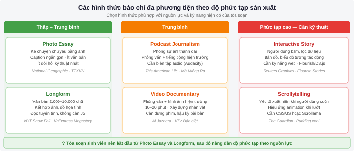
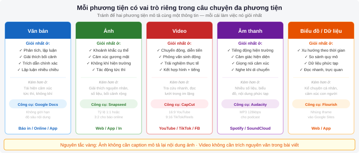
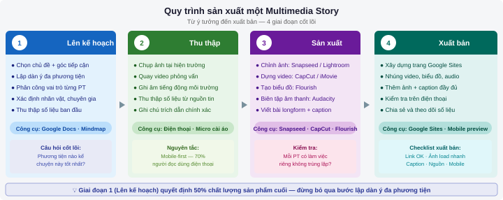

Multimedia Storytelling
Sau chương này, sinh viên có thể:
- Định nghĩa báo chí đa phương tiện và phân biệt các hình thức kể chuyện đa phương tiện phổ biến
- Kết hợp văn bản, ảnh, video, âm thanh và biểu đồ dữ liệu thành một câu chuyện báo chí hoàn chỉnh
- Áp dụng nguyên tắc tường thuật vào việc xây dựng các gói nội dung đa phương tiện
- Sản xuất và xuất bản một multimedia story hoàn chỉnh trên Google Sites
8.1 Báo chí đa phương tiện là gì?
Lịch sử và sự phát triển
Câu chuyện về báo chí đa phương tiện thực ra bắt đầu từ rất lâu trước khi internet xuất hiện. Những tờ báo đầu tiên chỉ có chữ thuần túy — rồi dần dần bổ sung hình minh họa thủ công, sau đó là ảnh chụp. Đài phát thanh mang âm thanh vào phòng khách người dân. Truyền hình kết hợp cả hình ảnh lẫn tiếng động, phỏng vấn và đồ họa. Mỗi bước đó là một bước tiến về "đa phương tiện" theo nghĩa rộng.
Nhưng cuộc cách mạng thực sự xảy ra vào những năm 2000, khi internet băng thông rộng cho phép phân phối hình ảnh chất lượng cao, âm thanh và video trực tiếp qua trình duyệt. Tờ New York Times tung ra "Snow Fall" năm 2012 — một phóng sự về trận tuyết lở chết người ở Washington với ảnh, video, đồ họa tương tác và văn bản longform cuộn liền mạch. Tác phẩm đó đạt 3,5 triệu lượt xem trong 6 ngày đầu và trở thành cột mốc lịch sử của báo chí đa phương tiện.
Tại Việt Nam, VnExpress là tờ báo đi tiên phong với định dạng Megastory — các phóng sự chuyên sâu kết hợp ảnh phóng sự, video, infographic và văn bản dài. Những tác phẩm như "Khoảnh khắc cuối cùng" (về vụ cháy chung cư Carina) hay loạt bài về biến đổi khí hậu ở đồng bằng sông Cửu Long đã nhận giải báo chí quốc gia và được đánh giá cao về mặt kỹ thuật sản xuất.
Các hình thức báo chí đa phương tiện phổ biến
| Hình thức | Đặc điểm | Ví dụ điển hình | Độ phức tạp sản xuất |
|---|---|---|---|
| Longform | Văn bản dài (2.000–10.000 chữ) kết hợp ảnh, đồ họa; đọc tuyến tính | NYT Snow Fall, VnExpress Megastory | Trung bình |
| Scrollytelling | Câu chuyện khai triển khi người dùng cuộn xuống; yếu tố xuất hiện theo từng bước | The Guardian "Firestorm", Reuters Graphics | Cao (cần kỹ thuật) |
| Interactive | Người dùng tương tác — bấm, lọc, tìm kiếm trong dữ liệu | Bản đồ COVID-19 VnExpress, Flourish stories | Cao |
| Podcast Journalism | Phóng sự âm thanh dài; kể chuyện qua lời nói và âm thanh hiện trường | This American Life, Radiolab; "Đất nước đứng dậy" VTV | Trung bình |
| Video Documentary | Phóng sự video dài; kết hợp phỏng vấn, hình ảnh, đồ họa | Al Jazeera documentaries, VTV Đặc biệt | Cao |
| Photo Essay | Kể chuyện chủ yếu bằng ảnh, caption ngắn; ít văn bản | National Geographic, Ảnh báo chí TTXVN | Thấp–Trung bình |

Không phải mọi câu chuyện đều cần tất cả các phương tiện. Câu hỏi quan trọng không phải "Làm thế nào để thêm video vào bài này?" mà là "Phương tiện nào kể câu chuyện này tốt nhất?" Đôi khi một bức ảnh duy nhất, được chụp đúng khoảnh khắc, hiệu quả hơn một video dài 5 phút.
8.2 Nguyên tắc kể chuyện đa phương tiện
Mỗi yếu tố có vai trò riêng — không trùng lặp
Nguyên tắc căn bản nhất của báo chí đa phương tiện: mỗi phương tiện làm việc mà nó làm tốt nhất, và không lặp lại những gì phương tiện khác đã làm. Đây là lỗi phổ biến nhất của người mới bắt đầu: chụp ảnh xong rồi viết caption mô tả lại y hệt nội dung trong ảnh; hoặc làm video phỏng vấn chuyên gia xong lại trích dẫn nguyên văn lời họ trong bài viết.
Hãy nghĩ về từng phương tiện như một nhạc cụ trong dàn nhạc — mỗi cái có âm sắc riêng, bổ sung lẫn nhau chứ không phải cạnh tranh:
- Văn bản: Giỏi nhất trong việc phân tích, giải thích bối cảnh, trích dẫn chi tiết và xây dựng lập luận. Không thể thay thế được khi cần độ chính xác tuyệt đối.
- Ảnh: Ghi lại khoảnh khắc cụ thể, biểu lộ cảm xúc trên gương mặt, truyền tải không khí hiện trường — những thứ mà nghìn chữ không diễn đạt bằng một bức ảnh.
- Video: Cho thấy chuyển động, diễn tiến, phỏng vấn với ngữ điệu và biểu cảm thật; mô phỏng trải nghiệm thực tế.
- Âm thanh: Tiếng ồn của thành phố, tiếng nước chảy, giọng nói run rẩy của nhân vật — âm thanh tạo cảm giác hiện diện không phương tiện nào thay thế được.
- Biểu đồ / dữ liệu: Hiển thị xu hướng, so sánh quy mô, trực quan hóa thông tin phức tạp nhanh hơn nhiều so với chữ viết.
Cấu trúc tường thuật phi tuyến tính
Một bài báo truyền thống được đọc từ đầu đến cuối — tuyến tính. Một multimedia story thường không như vậy: người dùng có thể bắt đầu từ video, cuộn qua infographic, dừng lại đọc kỹ một đoạn văn, rồi nhảy đến phần khác. Câu chuyện cần được thiết kế để vẫn có ý nghĩa dù người đọc đi theo thứ tự nào.
Một cấu trúc hiệu quả cho multimedia story thường gồm: Mở đầu bằng yếu tố gây chú ý nhất (thường là ảnh mạnh hoặc đoạn video ngắn), xây dựng bối cảnh qua văn bản, minh họa bằng dữ liệu/infographic, nhân cách hóa qua câu chuyện cá nhân (ảnh chân dung + trích dẫn), và kết thúc mở gợi mở câu hỏi hoặc kêu gọi hành động.
Mobile-first storytelling
Tại Việt Nam, hơn 70% lượt truy cập trang tin tức đến từ điện thoại di động (theo số liệu của VnExpress và các tòa soạn lớn). Điều này đặt ra yêu cầu thiết kế: mọi thứ phải đọc và xem được tốt trên màn hình nhỏ, đứng dọc, với ngón tay cuộn lướt.
- Ảnh dọc (portrait) hoặc vuông thường phù hợp hơn ảnh ngang (landscape) trên mobile.
- Văn bản cần font lớn hơn, đoạn ngắn hơn, xuống dòng nhiều hơn so với báo in.
- Video nên có tỷ lệ 9:16 (dọc) hoặc 1:1 (vuông) cho Stories và TikTok; 16:9 cho YouTube.
- Biểu đồ cần đủ lớn và đủ đơn giản để đọc được trên màn hình 5–6 inch.

Luôn xem lại bài đăng trên điện thoại thật trước khi bấm "Publish." Những thứ trông đẹp trên màn hình máy tính đôi khi vỡ hoàn toàn trên mobile — ảnh bị cắt, chữ quá nhỏ, biểu đồ không cuộn được.
8.3 Nhiếp ảnh báo chí trong kỷ nguyên số
Kỹ thuật chụp ảnh cơ bản trên điện thoại
Điện thoại thông minh hiện đại — đặc biệt là iPhone và các dòng Samsung flagship — có thể chụp ảnh chất lượng đủ dùng cho báo chí online và mạng xã hội. Điều tạo nên sự khác biệt không phải là thiết bị, mà là con mắt và kỹ thuật của người cầm máy.
Quy tắc một phần ba (Rule of Thirds): Bật lưới (grid) trong ứng dụng camera. Đặt chủ thể chính tại một trong bốn điểm giao nhau của lưới — thay vì chính giữa khung hình. Mắt người xem tự nhiên bị thu hút về những điểm đó, tạo ra bố cục sinh động hơn.
Ánh sáng là tất cả: Chụp ảnh chân dung ngoài trời vào "giờ vàng" (golden hour) — khoảng 30–60 phút sau bình minh hoặc trước hoàng hôn — cho ánh sáng ấm, mềm mại. Trong nhà, ưu tiên đặt nhân vật quay mặt về phía cửa sổ có ánh sáng tự nhiên. Tránh dùng đèn flash trực tiếp — làm phẳng mặt và tạo bóng xấu.
Kể chuyện qua ảnh: Mỗi ảnh báo chí tốt cần có nhân vật, hành động và bối cảnh. Đừng chỉ chụp chân dung tĩnh — hãy chụp người đang làm gì đó. Chụp một bà cụ đang gánh hàng sẽ kể câu chuyện hay hơn nhiều so với chụp bà đứng nhìn vào ống kính.
Gần hơn nữa: Lỗi phổ biến nhất của người mới: đứng quá xa. Hãy tiến gần lại — thể hiện nét mặt, bàn tay, chi tiết nhỏ. Những chi tiết đó chứa đựng cảm xúc.
Chỉnh sửa ảnh nhanh
Chỉnh sửa ảnh báo chí phải tuân thủ nguyên tắc: chỉ được điều chỉnh ánh sáng, màu sắc và độ tương phản toàn bộ ảnh — không được thêm, xóa hay di chuyển bất kỳ yếu tố nào trong ảnh. Việc chỉnh sửa có tính hư cấu là vi phạm đạo đức báo chí nghiêm trọng.
- Snapseed (miễn phí, iOS/Android): Công cụ chỉnh sửa ảnh mạnh mẽ nhất trên điện thoại. Tính năng Selective cho phép chỉnh sáng/tối từng vùng ảnh; HDRscape giúp ảnh phong cảnh sống động hơn.
- Lightroom Mobile (miễn phí/trả phí): Phiên bản di động của phần mềm chuyên nghiệp Adobe Lightroom. Tính năng presets giúp áp dụng nhất quán một "tone màu" cho toàn bộ ảnh trong loạt phóng sự.
Quyền sử dụng ảnh và nguồn ảnh miễn phí
Một trong những vấn đề pháp lý phổ biến nhất trong báo chí online Việt Nam là sử dụng ảnh không có bản quyền. Tải ảnh từ Google Images rồi đăng lên bài báo mà không xin phép là vi phạm bản quyền — dù ảnh đó "miễn phí trên mạng."
| Nguồn ảnh | Loại license | Có thể dùng thương mại? | Yêu cầu ghi nguồn? |
|---|---|---|---|
| Unsplash (unsplash.com) | Unsplash License | Có | Không bắt buộc nhưng nên ghi |
| Pexels (pexels.com) | Pexels License (CC0-like) | Có | Không bắt buộc |
| Wikimedia Commons | CC (nhiều loại) | Tùy từng ảnh | Bắt buộc — ghi rõ tác giả và license |
| Pixabay (pixabay.com) | Pixabay License | Có | Không bắt buộc |
| Google Images | Bản quyền tác giả | Không (trừ khi lọc CC) | Phải xin phép tác giả |
Khi dùng Wikimedia Commons, hãy đọc kỹ loại Creative Commons license của từng ảnh. License CC BY-SA yêu cầu ghi tên tác giả VÀ phải chia sẻ tác phẩm của bạn theo cùng điều khoản. License CC BY-NC không cho phép dùng thương mại. Vi phạm bản quyền ảnh có thể dẫn đến yêu cầu bồi thường tài chính.
8.4 Video báo chí ngắn
Quay video bằng điện thoại: bố cục, ánh sáng, âm thanh
Điện thoại đã thay thế camera truyền thống trong hầu hết hoàn cảnh tác nghiệp báo chí hàng ngày. Một phóng viên có điện thoại iPhone 14 hoặc Samsung Galaxy S23 trở lên hoàn toàn có thể quay video chất lượng đủ phát sóng cho tin tức online. Các nguyên tắc cần nhớ:
Bố cục: Giữ điện thoại nằm ngang (landscape) cho video YouTube và TV; dọc (portrait) cho TikTok, Instagram Reels và Stories. Không xoay điện thoại giữa chừng khi đang quay. Dùng giá đỡ (tripod mini) để tránh rung tay — cảnh quay rung là "kẻ thù" số một của video chuyên nghiệp.
Ánh sáng: Đặt nguồn sáng (cửa sổ, đèn) phía trước mặt nhân vật, không phải phía sau. Phòng ngược sáng (backlight) — khi nguồn sáng ở phía sau nhân vật — là lỗi kỹ thuật phổ biến nhất: nhân vật trở thành bóng tối trên nền sáng. Nếu bắt buộc quay trong điều kiện ánh sáng yếu, đèn LED mini gắn điện thoại (giá vài trăm nghìn đồng) là giải pháp hiệu quả.
Âm thanh: Âm thanh tệ phá hỏng video tốt hơn là video tệ phá hỏng âm thanh tốt. Micro tích hợp điện thoại thu rất nhiều tiếng ồn xung quanh. Khi phỏng vấn, hãy đầu tư micro cài áo (lavalier microphone) — loại cơ bản kết nối qua jack 3.5mm giá khoảng 200.000–500.000 đồng. Tránh quay ở nơi có gió mạnh, tiếng xe cộ hay nhạc nền — những âm thanh này không thể loại bỏ hoàn toàn trong hậu kỳ.
Cắt ghép cơ bản
CapCut (miễn phí, iOS/Android/Windows): Ứng dụng dựng phim phổ biến nhất hiện nay cho nội dung mạng xã hội. Giao diện trực quan, có sẵn templates, phụ đề tự động (auto-caption) bằng tiếng Việt, hiệu ứng chuyển cảnh và kho nhạc nền. Phù hợp cho video TikTok, Reels và Facebook.
iMovie (miễn phí, iOS/macOS): Phần mềm dựng phim của Apple. Giao diện sạch, timeline trực quan, xuất video chất lượng cao. Phù hợp cho video YouTube và phóng sự dài hơn.
Quy trình dựng phim cơ bản: Import cảnh quay → Cắt bỏ phần thừa → Sắp xếp theo logic → Thêm phụ đề/chú thích → Thêm nhạc nền (âm lượng thấp hơn giọng nói) → Xuất video.
Upload và nhúng từ YouTube
- Tạo tài khoản YouTube và tạo kênh cho tòa soạn hoặc cá nhân.
- Nhấn nút Tạo (biểu tượng máy quay có dấu +) → Tải video lên.
- Điền tiêu đề (chứa từ khóa), mô tả chi tiết, thêm tags và chọn thumbnail hấp dẫn.
- Đặt chế độ hiển thị: Công khai (Public), Không công khai (Unlisted — ai có link mới xem được) hoặc Riêng tư.
- Sau khi video xử lý xong, vào video → Chia sẻ → Nhúng (Embed). Sao chép đoạn code iframe.
- Dán code iframe vào bài báo hoặc trang Google Sites (chế độ HTML/Embed).
Thumbnail quyết định 40–50% số lượt click vào video. Thumbnail tốt có: khuôn mặt người với biểu cảm rõ ràng, chữ ngắn gọn (3–5 từ) dễ đọc ở kích thước nhỏ, màu sắc tương phản cao. Dùng Canva để thiết kế thumbnail kích thước 1280×720px.
8.5 Podcast và audio báo chí
Tại sao podcast đang bùng nổ?
Podcast là một trong những định dạng nội dung tăng trưởng nhanh nhất thế giới. Tại Việt Nam, sự bùng nổ của podcast gắn liền với việc người dùng điện thoại thông minh ngày càng có thói quen nghe nội dung trong lúc đi đường, tập thể dục hoặc làm việc nhà. Những podcast báo chí như "Mở Miệng Ra" (Zing), "Câu chuyện lịch sử" (Tuổi Trẻ) hay "Sức khỏe 360" của các đài phát thanh đã đạt hàng triệu lượt nghe mỗi tháng.
Với nhà báo cá nhân, podcast là cơ hội để xây dựng thương hiệu cá nhân và tiếp cận nhóm khán giả trung thành cao — người nghe podcast thường gắn bó với chương trình lâu dài hơn độc giả báo thông thường.
Ghi âm chất lượng cao bằng điện thoại
Ghi âm podcast không nhất thiết cần phòng thu đắt tiền. Một phòng nhỏ với nhiều đồ đạc (tủ quần áo, giá sách, ghế sofa) sẽ hút âm vang tốt hơn phòng trống. Một số nguyên tắc ghi âm đơn giản:
- Dùng micro cài áo (lavalier) cắm vào điện thoại — chất lượng tốt hơn hẳn micro tích hợp.
- Ghi âm trong môi trường yên tĩnh. Tắt điều hòa, quạt và thông báo điện thoại trước khi ghi.
- Nói cách micro 15–20cm — không quá gần (tạo âm bộc phát) và không quá xa (tiếng nhỏ, nhiều tiếng ồn nền).
- App ghi âm tốt: Voice Record Pro (iOS), Hi-Q MP3 Voice Recorder (Android) — hỗ trợ ghi WAV hoặc MP3 chất lượng cao.
Biên tập âm thanh cơ bản với Audacity
Audacity là phần mềm chỉnh sửa âm thanh miễn phí, mã nguồn mở, chạy trên Windows, macOS và Linux. Đây là công cụ tiêu chuẩn cho podcast beginner toàn thế giới.
- Tải Audacity từ audacityteam.org và cài đặt.
- Import file âm thanh: File → Import → Audio. Sóng âm sẽ hiển thị dưới dạng đồ thị trực quan.
- Loại bỏ tiếng ồn nền: Chọn một đoạn im lặng (2–3 giây) → Effect → Noise Reduction → Get Noise Profile → Chọn toàn bộ track → Effect → Noise Reduction → OK.
- Cắt bỏ phần thừa: Dùng chuột chọn đoạn muốn xóa → Nhấn Delete. Cắt bỏ ừ/à, khoảng dừng quá dài, lỗi nói.
- Chuẩn hóa âm lượng: Chọn toàn track → Effect → Normalize → Đặt Peak amplitude -1dB.
- Xuất file: File → Export → Export as MP3. Chọn bitrate 128 kbps (đủ chất lượng cho podcast, file nhỏ).
Phân phối qua SoundCloud và Spotify
SoundCloud là nền tảng đơn giản nhất để bắt đầu: tạo tài khoản, upload file MP3, thêm ảnh bìa và mô tả. Gói miễn phí cho phép 3 giờ âm thanh. SoundCloud cung cấp code nhúng (embed) để đặt player vào bài báo hoặc website.
Spotify for Podcasters (podcasters.spotify.com) là cách nhanh nhất để podcast của bạn xuất hiện trên Spotify — nền tảng podcast số 1 toàn cầu. Sau khi upload và xác minh, podcast sẽ có mặt trên Spotify trong vòng 24–48 giờ. Nền tảng cũng cung cấp số liệu phân tích chi tiết về lượng nghe và hành vi người nghe.
8.6 Thực hành: Xây dựng Multimedia Story trên Google Sites
Trong phần này, bạn sẽ xây dựng một bài báo longform đầy đủ trên Google Sites, kết hợp văn bản, ảnh, video nhúng từ YouTube và biểu đồ từ Flourish. Đây là bài tập tổng hợp của cả chương.
Bước 1: Lên kế hoạch nội dung
- Chọn chủ đề: Chọn một vấn đề xã hội tại địa phương bạn — ô nhiễm môi trường, vấn đề giao thông, điều kiện học tập, v.v. Chủ đề cần có dữ liệu có thể trực quan hóa và câu chuyện con người để minh họa.
- Lập dàn ý đa phương tiện: Trước khi sản xuất, vẽ ra cấu trúc bài: Phần 1 dùng phương tiện gì? Phần 2 dùng gì? Phân công từng phương tiện một vai trò cụ thể, không trùng lặp.
- Chuẩn bị tài nguyên: Chụp ảnh, quay video, thu thập số liệu để làm biểu đồ, xác định ai sẽ phỏng vấn.
Bước 2: Tạo biểu đồ với Flourish
- Truy cập flourish.studio và đăng ký tài khoản miễn phí.
- Nhấn New visualization → Chọn loại biểu đồ phù hợp: Bar chart (cột ngang) cho so sánh, Line chart (đường) cho xu hướng theo thời gian, Map cho dữ liệu địa lý.
- Nhập dữ liệu vào bảng (có thể copy từ Google Sheets). Flourish tự động vẽ biểu đồ.
- Tùy chỉnh màu sắc, tiêu đề và nhãn dữ liệu trong tab Preview.
- Nhấn Export & publish → Sao chép đường link hoặc code nhúng (iframe).
Bước 3: Xây dựng trang trên Google Sites
- Mở sites.google.com, tạo trang mới. Đặt tên theo chủ đề bài báo.
- Chọn layout Một cột (single column) cho bài longform — dễ đọc trên mobile hơn hai cột.
- Phần mở đầu: Thêm ảnh bìa toàn chiều rộng (full-width hero image) và tiêu đề bài. Ảnh bìa cần là ảnh mạnh nhất, gây ấn tượng ngay lập tức. Thêm một đoạn mở đầu ngắn (2–3 câu) dẫn dắt vào chủ đề.
- Phần nội dung chính: Xen kẽ văn bản với ảnh. Sau mỗi 300–400 chữ, thêm ít nhất một yếu tố trực quan (ảnh, biểu đồ hoặc video) để "phá vỡ" khối chữ dày và giữ người đọc.
- Nhúng video YouTube: Chèn → Nhúng (Embed) → Dán URL YouTube. Google Sites tự tạo player video inline.
- Nhúng biểu đồ Flourish: Chèn → Nhúng → Dán URL Flourish. Biểu đồ tương tác sẽ hiển thị trực tiếp trong trang.
- Phần kết: Tóm tắt vấn đề, trích dẫn cuối từ nhân vật trong câu chuyện, và thông tin tác giả.
- Nhấn Xuất bản và kiểm tra trên điện thoại trước khi chia sẻ.
Trước khi chia sẻ multimedia story với độc giả, hãy kiểm tra: (1) Tất cả link và embed có hoạt động không? (2) Ảnh có load nhanh trên điện thoại 3G không? (3) Caption ảnh có đầy đủ thông tin tác giả/nguồn không? (4) Chính tả và dữ liệu đã được kiểm tra chưa? (5) Bài trông như thế nào trên màn hình điện thoại?

Bảng tổng hợp: Công cụ sản xuất đa phương tiện
| Công việc | Công cụ miễn phí | Công cụ trả phí | Ghi chú |
|---|---|---|---|
| Chỉnh sửa ảnh điện thoại | Snapseed, Google Photos | Lightroom Mobile | Snapseed đủ dùng cho hầu hết trường hợp |
| Dựng video điện thoại | CapCut, iMovie | Adobe Premiere Rush | CapCut tốt nhất cho video mạng xã hội |
| Biên tập âm thanh | Audacity (desktop) | Adobe Audition | Audacity đủ cho podcast cơ bản |
| Biểu đồ / Data viz | Flourish, Datawrapper | Tableau, Infogram | Flourish đẹp và dễ nhúng nhất |
| Thiết kế đồ họa | Canva (gói miễn phí) | Canva Pro, Adobe Express | Canva đủ dùng cho infographic báo chí |
| Xuất bản câu chuyện | Google Sites | WordPress, Adobe Spark | Google Sites lý tưởng cho bài tập và portfolio |
| Phân phối podcast | SoundCloud, Spotify for Podcasters | Buzzsprout, Anchor Pro | Bắt đầu với Spotify for Podcasters |
8.7 AI hỗ trợ sản xuất nội dung đa phương tiện
Trí tuệ nhân tạo đang rút ngắn đáng kể thời gian sản xuất trong nhiều công đoạn của multimedia storytelling — từ chỉnh ảnh tự động, phụ đề tự động cho video, đến tóm tắt nội dung dài. Đây là những kỹ năng thực tế mà nhà báo hiện đại cần nắm vững.
AI trong xử lý ảnh và video
- Google Photos Magic Eraser: Xóa đối tượng không mong muốn khỏi ảnh trong vài giây. Lưu ý đạo đức: chỉ dùng cho ảnh minh họa, tuyệt đối không dùng cho ảnh tin tức thực tế — đây là vi phạm đạo đức báo chí nghiêm trọng.
- CapCut AI Auto-Caption: Tự động tạo phụ đề tiếng Việt từ giọng nói trong video, đạt độ chính xác 80–90%. Tiết kiệm hàng giờ công việc thủ công. Luôn đọc soát lại trước khi xuất bản.
- Adobe Firefly (trong Lightroom): Tính năng Generative Fill cho phép mở rộng khung ảnh hoặc xóa vật thể. Tương tự Magic Eraser — chỉ dùng cho ảnh minh họa, không phải ảnh tin tức.
- DaVinci Resolve (phiên bản miễn phí): AI tự động color grading, loại bỏ tiếng ồn nền khỏi audio track. Kết quả tốt hơn hẳn các app điện thoại.
AI tạo biểu đồ và infographic
Flourish và Datawrapper đều tích hợp AI để gợi ý loại biểu đồ phù hợp khi bạn upload dữ liệu. Ngoài ra, ChatGPT và Claude có thể giúp:
- Làm sạch và chuẩn hóa dữ liệu Excel/CSV trước khi đưa vào Flourish
- Gợi ý cách trực quan hóa dữ liệu phức tạp: "Dữ liệu này nên dùng biểu đồ gì và tại sao?"
- Viết tiêu đề và chú thích biểu đồ súc tích, dễ hiểu
- Tạo code Python/JavaScript để vẽ biểu đồ tùy chỉnh nếu cần
"Tôi có bảng dữ liệu sau [dán bảng]. Hãy: (1) Xác định xu hướng quan trọng nhất; (2) Gợi ý 2–3 loại biểu đồ phù hợp và giải thích lý do; (3) Viết tiêu đề biểu đồ ngắn gọn (dưới 10 chữ) và một câu chú thích mô tả điểm chính."
AI hỗ trợ sản xuất podcast
Quy trình sản xuất podcast truyền thống tốn nhiều thời gian nhất ở khâu biên tập và cắt ghép. AI đang thay đổi điều đó:
- Adobe Podcast Enhance (podcast.adobe.com): Nâng cấp chất lượng âm thanh miễn phí — biến giọng nói thu bằng micro điện thoại thành chất lượng phòng thu chuyên nghiệp. Kết quả ấn tượng và dùng được ngay.
- Descript: Chỉnh sửa podcast bằng cách chỉnh văn bản phiên âm — xóa chữ trong bản phiên âm thì đoạn âm thanh tương ứng cũng bị xóa. Rất trực quan.
- Otter.ai / Whisper (OpenAI): Phiên âm (transcribe) tự động file âm thanh tiếng Việt. Whisper là model mã nguồn mở, miễn phí, độ chính xác cao với tiếng Việt.
Giới hạn đạo đức khi dùng AI trong báo chí đa phương tiện
- Không chỉnh sửa ảnh tin tức: Xóa người, thêm vật thể, thay đổi bối cảnh trong ảnh báo chí dù bằng AI hay Photoshop đều là vi phạm đạo đức nghiêm trọng và có thể bị sa thải.
- Không dùng AI voice clone cho phỏng vấn: Tạo giọng nói giả lấy danh nghĩa người thật (deepfake audio) mà không ghi chú rõ ràng là thông tin giả mạo.
- Không dùng ảnh AI làm ảnh tin tức: Ảnh tạo bởi Midjourney, DALL-E không thể dùng minh họa cho tin tức thực tế nếu không ghi chú "ảnh minh họa do AI tạo."
- Luôn công khai khi dùng AI: Nếu nội dung có sự trợ giúp đáng kể của AI (ảnh, giọng đọc, văn bản), cần ghi chú minh bạch cho độc giả.
| Công đoạn | Công cụ AI | Thời gian tiết kiệm | Lưu ý |
|---|---|---|---|
| Phụ đề tự động cho video | CapCut AI, YouTube Auto-caption | 60–80% | Soát lại tiếng Việt có dấu |
| Nâng chất lượng âm thanh | Adobe Podcast Enhance | Thay thế hoàn toàn | Miễn phí, kết quả rất tốt |
| Phiên âm phỏng vấn | Whisper, Otter.ai | 70–90% | Kiểm tra tên riêng, số liệu |
| Viết caption ảnh | ChatGPT / Claude | 50% | Thêm thông tin tác giả thủ công |
| Gợi ý loại biểu đồ | Claude, Flourish AI | 30% | Quyết định cuối thuộc về editor |
Câu hỏi ôn tập
- Giải thích nguyên tắc "mỗi phương tiện có vai trò riêng" trong báo chí đa phương tiện. Lấy một ví dụ cụ thể về một câu chuyện báo chí và phân tích cách mỗi yếu tố (văn bản, ảnh, video, âm thanh) đóng vai trò gì mà các yếu tố khác không thể thay thế.
- So sánh định dạng longform và scrollytelling: điểm giống, điểm khác, và hoàn cảnh nào phù hợp với từng định dạng? Tại sao một tòa soạn báo sinh viên nên bắt đầu với longform thay vì scrollytelling?
- Bạn được phân công làm một phóng sự về tình trạng rác thải nhựa ở một con sông tại địa phương. Lên kế hoạch sản xuất multimedia story hoàn chỉnh: (a) Liệt kê các phương tiện sẽ sử dụng và vai trò của mỗi phương tiện; (b) Xác định những gì cần thu thập ở hiện trường; (c) Công cụ sẽ dùng để sản xuất và xuất bản.
- Thực hành: Xây dựng một multimedia story ngắn (ít nhất 500 chữ văn bản, 3 ảnh, 1 video nhúng và 1 biểu đồ Flourish) trên Google Sites về một chủ đề tự chọn liên quan đến cuộc sống sinh viên. Chia sẻ link để giảng viên và bạn cùng lớp xem.
- Adobe Podcast Enhance có thể biến âm thanh chất lượng thấp thành "phòng thu." Điều này đặt ra câu hỏi gì về tính xác thực trong báo chí âm thanh? Đâu là ranh giới giữa "cải thiện kỹ thuật" và "làm giả hiện trường"?
- Một phóng viên dùng AI xóa một người qua đường khỏi ảnh hiện trường vì "họ làm mất tập trung." Một phóng viên khác dùng AI để tự động phiên âm toàn bộ buổi phỏng vấn 2 giờ rồi đọc soát lại. Phân tích từng trường hợp: trường hợp nào vi phạm đạo đức báo chí và tại sao?